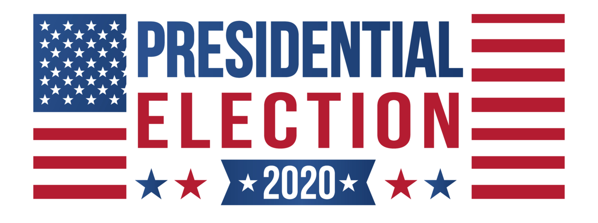

Voter Power Index (VPI) is “the relative likelihood that an individual voter in a state will determine the Electoral College winner”, based on their election models. The ability of a voter to change the outcome of the election is, after all, the bottom line when people think about a vote mattering.
Tipping Point Chance (TPC) is the chance the state will deliver the decisive vote in the Electoral College.
How much each state matters
Two measures help capture how important a state and its voters will be in determining the next president: “Tipping-point chance” is the probability that a state will provide the decisive vote in the Electoral College. “Voter power index” is the relative likelihood that an individual voter in a state will determine the Electoral College winner.